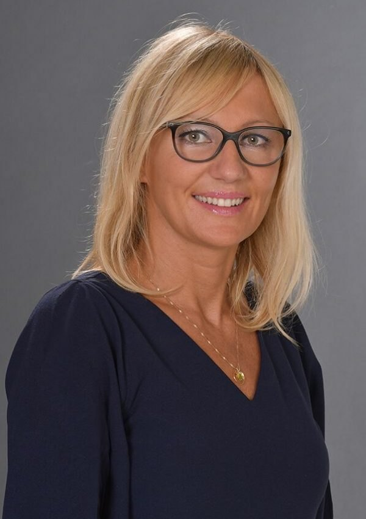

Über mich
Dr. Karina Schick – Zahnärztin, Heilpraktikerin, Mutter von 4 Kindern
Seit 25 Jahren bin ich mit Leidenschaft Zahnärztin. Heute verbinde ich diese Erfahrung mit meiner Begeisterung für Ästhetik und Naturheilkunde – in meiner eigenen Praxis in Westerburg.

Hallo, ich binKarina
Mein Weg
Seit 25 Jahren bin ich mit Leidenschaft als Zahnärztin tätig. Mein besonderer Schwerpunkt liegt dabei in der ästhetischen Zahnmedizin, Prothetik und Chirurgie. In all diesen Jahren habe ich gelernt, wie eng medizinische Qualität, Ästhetik und das persönliche Wohlbefinden eines Menschen miteinander verbunden sind.
Ästhetik hat mich dabei schon immer besonders fasziniert. Mich interessiert nicht nur, was man verändern kann, sondern vor allem, wie man Schönheit natürlich, harmonisch und individuell unterstützen kann.
Aus diesem Interesse heraus habe ich mich entschieden, zusätzlich den Weg als Heilpraktikerin zu gehen. Für mich ist das keine Abkehr von meiner Tätigkeit als Zahnärztin, sondern eine wertvolle Erweiterung meiner bisherigen Arbeit und meiner medizinischen Perspektive.
Ich werde auch weiterhin als Zahnärztin tätig sein. Gleichzeitig möchte ich mit meiner Praxis für ästhetische Medizin einen Raum schaffen, in dem ich meine langjährige medizinische Erfahrung mit meiner Leidenschaft für Ästhetik verbinden kann.
Was mir wichtig ist
Bei jeder Behandlung steht für mich der Mensch im Mittelpunkt. Ich möchte keine Gesichter verändern und keinem bestimmten Schönheitsideal folgen. Mein Ziel ist es, Ihre individuelle Schönheit und natürliche Ausstrahlung zu bewahren und dort zu unterstützen, wo Sie sich selbst eine Veränderung wünschen.
Eine ausführliche und ehrliche Beratung ist für mich die Grundlage jeder Behandlung. Ich nehme mir Zeit, Ihre Wünsche zu verstehen, Möglichkeiten und Grenzen offen zu besprechen und gemeinsam mit Ihnen einen Weg zu finden, der zu Ihnen passt.
Dabei sind mir Natürlichkeit, Harmonie und ein verantwortungsvoller Umgang mit ästhetischen Behandlungen besonders wichtig.
Der Blick einer Zahnärztin
Meine 25-jährige Erfahrung als Zahnärztin hat meinen Blick für Proportionen, Symmetrie und Ästhetik geprägt. Die Heilpraktik erweitert diesen Blick um weitere Möglichkeiten der ästhetischen Behandlung.
Ich möchte, dass Sie meine Praxis mit einem guten Gefühl verlassen – und vor allem das Gefühl haben, Sie selbst zu sein. Nur vielleicht ein bisschen frischer, strahlender und wohler in Ihrer eigenen Haut.
Denn für mich bedeutet Ästhetik nicht, einen Menschen zu verändern. Es bedeutet, seine natürliche Schönheit sichtbar zu machen.
Ihre Dr. Karina Schick
Qualifikation
Ausbildung & Erfahrung
Zahnärztin seit 25 Jahren
Promovierte Zahnärztin mit den Schwerpunkten ästhetische Zahnmedizin, Prothetik und Chirurgie.
Heilpraktikerin
Staatliche Erlaubnis zur Ausübung der Heilkunde nach dem Heilpraktikergesetz.
Ästhetische Medizin
Regelmäßige Fortbildungen in Injektionstechniken, Biostimulatoren und Hautgesundheit.
Termin & Beratung
Lernen wir uns persönlich kennen
In einem persönlichen Erstgespräch nehme ich mir Zeit für Ihre Wünsche, berate Sie ehrlich zu Möglichkeiten und Grenzen und erstelle Ihnen einen individuellen Behandlungsplan.